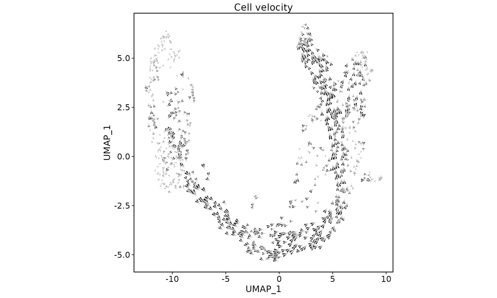
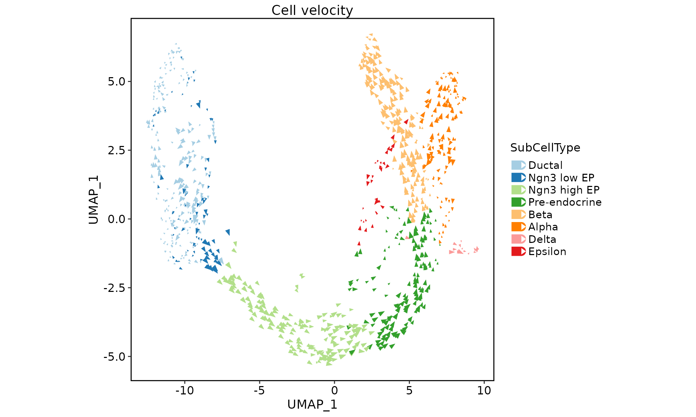
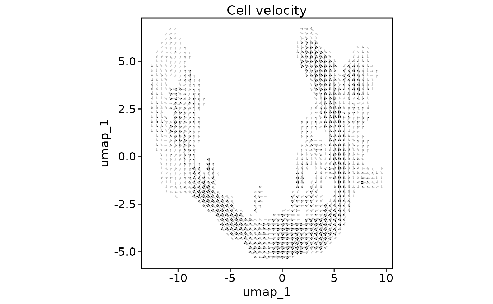
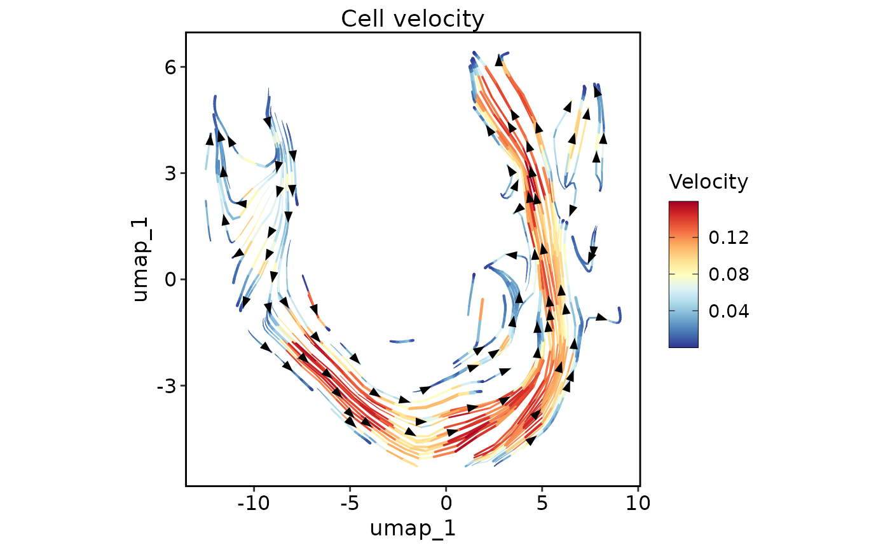
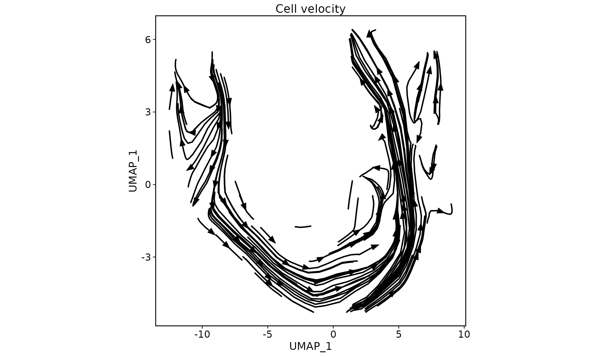
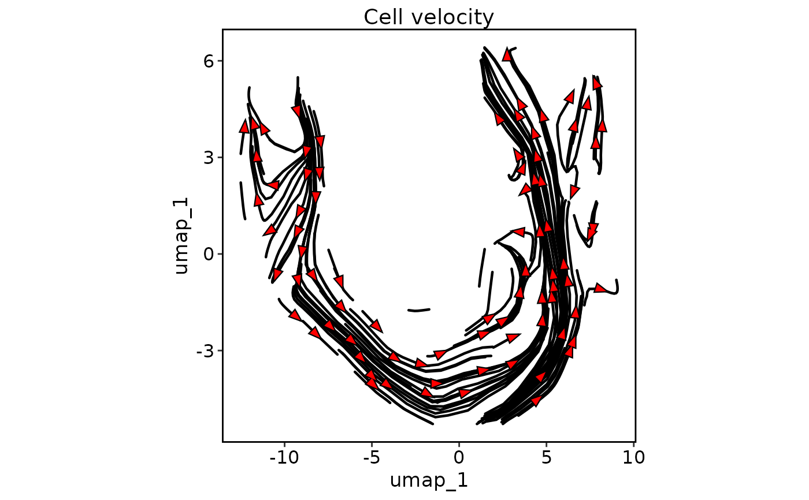

VelocityPlot.RdVelocity Plot
VelocityPlot(
srt,
reduction,
dims = c(1, 2),
velocity = "stochastic",
plot_type = c("raw", "grid", "stream"),
group_by = NULL,
group_palette = "Paired",
n_neighbors = ceiling(ncol(srt)/50),
density = 1,
smooth = 0.5,
scale = 1,
min_mass = 1,
cutoff_perc = 5,
arrow_angle = 20,
arrow_flank = 0.8,
arrow_color = "black",
streamline_L = 5,
streamline_minL = 1,
streamline_res = 1,
streamline_n = 15,
streamline_jitter = 1,
streamline_size = c(0, 0.8),
streamline_alpha = 1,
streamline_color = NULL,
streamline_palette = "RdYlBu",
streamline_pal_color = NULL,
streamline_bg_color = "white",
streamline_bg_stroke = 0.5,
theme_use = "theme_scp",
aspect.ratio = 1,
title = "Cell velocity",
subtitle = NULL,
xlab = NULL,
ylab = NULL,
lab_cex = 1,
xlen_npc = 0.15,
ylen_npc = 0.15,
legend.position = "right",
legend.direction = "vertical",
return_layer = FALSE
)data("pancreas1k")
pancreas1k <- RunSCVELO(srt = pancreas1k, group_by = "SubCellType", liner_reduction = "PCA", nonliner_reduction = "UMAP", return_seurat = TRUE)
#> 'misc' slot in the srt object is not converted.
#> 'tools' slot in the srt object is not converted.
#> Warning: Keys should be one or more alphanumeric characters followed by an underscore, setting key from variance_stochastic_ to variancestochastic_
#> Warning: Keys should be one or more alphanumeric characters followed by an underscore, setting key from variance_velocity_ to variancevelocity_
#> Warning: Keys should be one or more alphanumeric characters followed by an underscore, setting key from X_UMAP_ to XUMAP_
#> Warning: All keys should be one or more alphanumeric characters followed by an underscore '_', setting key to XUMAP_
#> Warning: Keys should be one or more alphanumeric characters followed by an underscore, setting key from stochastic_UMAP_ to stochasticUMAP_
#> Warning: All keys should be one or more alphanumeric characters followed by an underscore '_', setting key to stochasticUMAP_
#> Warning: 'uns: neighbors' will not be converted. It is a Python object connected with the Python session. You may need to convert manually.
VelocityPlot(pancreas1k, reduction = "UMAP")

VelocityPlot(pancreas1k, reduction = "UMAP", group_by = "SubCellType")

VelocityPlot(pancreas1k, reduction = "UMAP", plot_type = "grid")

VelocityPlot(pancreas1k, reduction = "UMAP", plot_type = "stream")

VelocityPlot(pancreas1k, reduction = "UMAP", plot_type = "stream", streamline_color = "black")

VelocityPlot(pancreas1k, reduction = "UMAP", plot_type = "stream", streamline_color = "black", arrow_color = "red")
